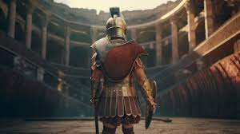
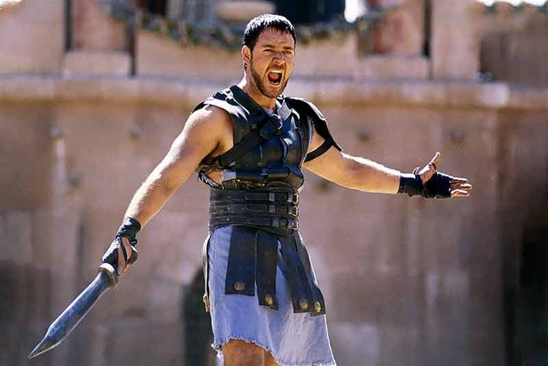

Дія фільму «Гладіатор» розгортається в 180 році нашої ери, коли імператорські війська на чолі з генералом Максимусом ведуть війну з німецькими варварами. Здобувши перемогу, він поспішає поділитися радісною новиною з Марком Аврелієм, але в результаті політичних інтриг сам стає вигнанцем, звинуваченим у зраді та взятим під варту. Зумівши вирватися з ув'язнення, Максимус повертається додому, де знаходить своїх дружину та сина вбитими. Збожеволілого від горя чоловіка і батька, який втратив відразу все, беруть у полон работоргівці, звідки він потрапляє до Проксімо, що виставляє на бої своїх гладіаторів. Спочатку колишній генерал відмовляється битися на арені Колізею, але згодом стає справжнім героєм, здатним кинути виклик самому імператору Коммоду.
Моменти з фільму

